本文介绍了 DeepSeek-V4 系列的预览版本，包含两个强大的 Mixture-of-Experts (MoE) 语言模型：DeepSeek-V4-Pro（1.6T 总参数，49B 激活）和 DeepSeek-V4-Flash（284B 总参数，13B 激活），均支持 100万 token 的上下文长度。
在百万 token 上下文场景下，DeepSeek-V4-Pro 的单 token 推理 FLOPs 仅为 DeepSeek-V3.2 的 27%，KV 缓存仅为其 10%。DeepSeek-V4-Pro-Max（最大推理模式）重新定义了开源模型的最优水平，在核心任务上超越其前代模型。
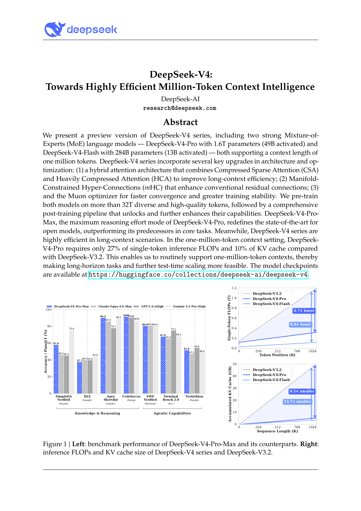
推理模型的兴起开创了测试时扩展的新范式，为大语言模型 (LLM) 带来了显著的性能提升。然而，这种扩展范式受到 vanilla 注意力机制二次计算复杂度的根本性限制，为超长上下文和推理过程造成了瓶颈。
为突破超长上下文的效率壁垒，DeepSeek 开发了 DeepSeek-V4 系列：
通过架构创新，DeepSeek-V4 系列在处理超长序列时实现了计算效率的飞跃，原生支持百万 token 的上下文长度。
DeepSeek-V4 系列保留了 Transformer 架构和多 Token 预测 (MTP) 模块，同时在架构和优化上引入了多项关键升级。
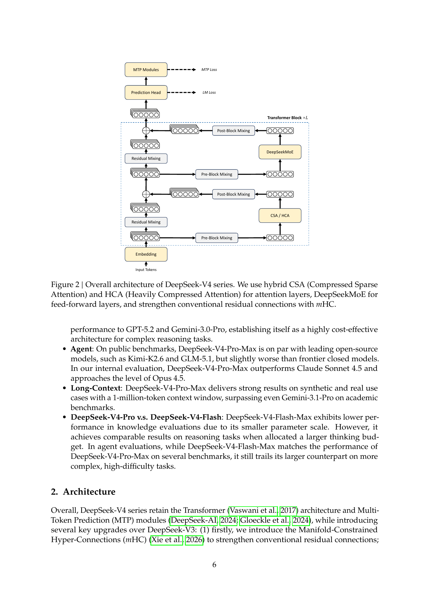
DeepSeek-V4 继续采用 DeepSeekMoE 范式，使用细粒度路由专家和共享专家。与 V3 的区别包括：
与 DeepSeek-V3 相同，设置 MTP 模块和目标，策略不做修改。
DeepSeek-V4 引入流形约束超连接 (mHC) 来增强相邻 Transformer 块之间的残差连接。相比朴素的超连接 (HC)，mHC 的核心思想是将残差映射约束到特定的流形上，从而增强层间信号传播的稳定性。
标准 HC 通过因子 nhc 扩展残差流的宽度，从 ℝd 到 ℝnhc×d。HC 引入三个线性映射：输入映射 Al、残差变换 Bl 和输出映射 Cl，残差状态更新公式为：
mHC 的核心创新是将残差映射矩阵 Bl 约束到双随机矩阵的流形（Birkhoff 多面体）上：
这一约束确保映射矩阵的谱范数 ‖Bl‖2 不超过 1，使得残差变换非扩张，增强数值稳定性。集合 M 在乘法下封闭，保证深层堆叠时的稳定性。
三个线性映射的参数通过动态（输入依赖）和静态（输入无关）两个分量动态生成。输入 Xl 先经过 RMSNorm 和展平得到 X̂l，然后通过可学习参数生成动态分量，加上静态偏置得到原始参数 Ãl、B̃l、C̃l。
当上下文长度达到极端规模时，注意力机制成为模型的主要计算瓶颈。DeepSeek-V4 设计了两种高效注意力架构——压缩稀疏注意力 (CSA) 和重压缩注意力 (HCA)——并以交错混合方式使用，大幅降低长文本场景下的注意力计算成本。
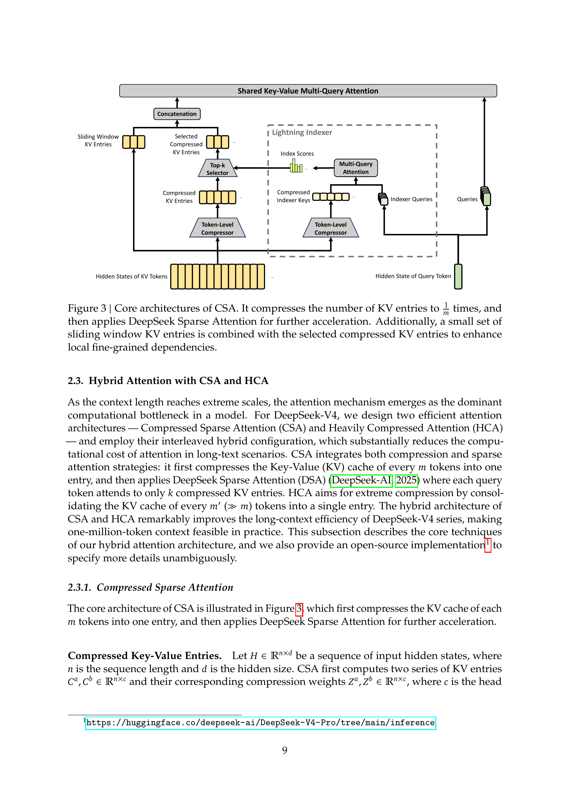
压缩 KV 条目：给定输入隐状态 H ∈ ℝn×d，CSA 首先计算两组 KV 条目 Ca, Cb 及其压缩权重 Za, Zb，然后将每 m 个 KV 条目压缩为一个，通过 softmax 加权的 Hadamard 乘积得到压缩条目 CComp，将序列长度压缩为原来的 1/m。
Lightning Indexer 稀疏选择：获得压缩 KV 条目后，CSA 应用 DSA 策略选择 top-k 个压缩 KV 条目进行核心注意力。通过低秩的 indexer 查询和 indexer 压缩键计算 index 分数，使用 top-k 选择器保留子集 CtSprsComp 用于后续核心注意力。
共享键值 MQA：在选择的稀疏 KV 条目上执行多查询注意力 (MQA)，每个压缩 KV 条目同时作为注意力键和值。采用分组输出投影策略减轻高维计算负担。
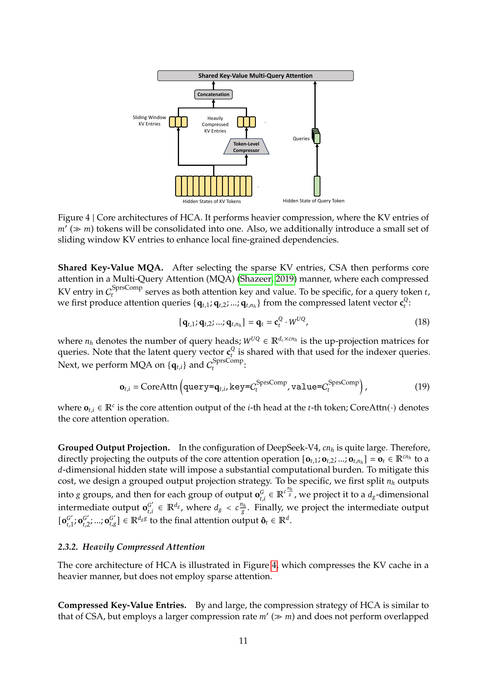
HCA 的压缩策略与 CSA 类似，但采用更大的压缩率 m'（≫ m）且不执行重叠压缩。HCA 将序列长度压缩为原来的 1/m'。HCA 同样使用共享键值 MQA 和分组输出投影。
通过混合使用 CSA 和 HCA 以及低精度计算和存储优化，DeepSeek-V4 系列的注意力模块在长上下文场景下实现了显著的效率提升：
DeepSeek-V4 对大部分模块采用 Muon 优化器，因其更快的收敛速度和更好的训练稳定性。嵌入模块、预测头、mHC 的静态偏置和门控因子、RMSNorm 权重仍使用 AdamW 优化器。
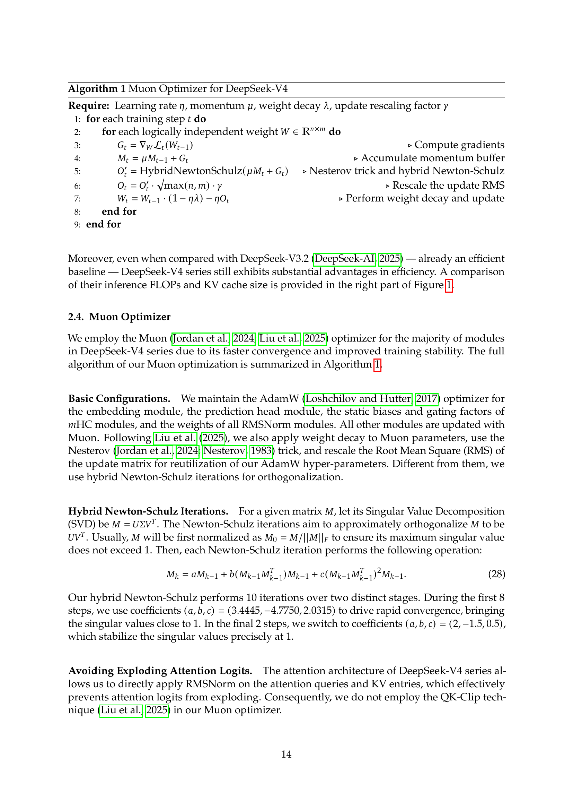
用于近似正交化更新矩阵。分两阶段共 10 次迭代：前 8 步使用系数 (a,b,c) = (3.4445, −4.7750, 2.0315) 快速收敛，最后 2 步切换为 (2, −1.5, 0.5) 精确收敛。
DeepSeek-V4 的注意力架构允许直接对 query 和 KV 条目应用 RMSNorm，有效防止注意力 logit 爆炸，因此不需要 QK-Clip 技术。
MoE 模型通过专家并行 (EP) 加速，但 EP 需要大量节点间通信。DeepSeek-V4 提出了细粒度的 EP 方案，将通信和计算融合为一个单一的流水线化内核。
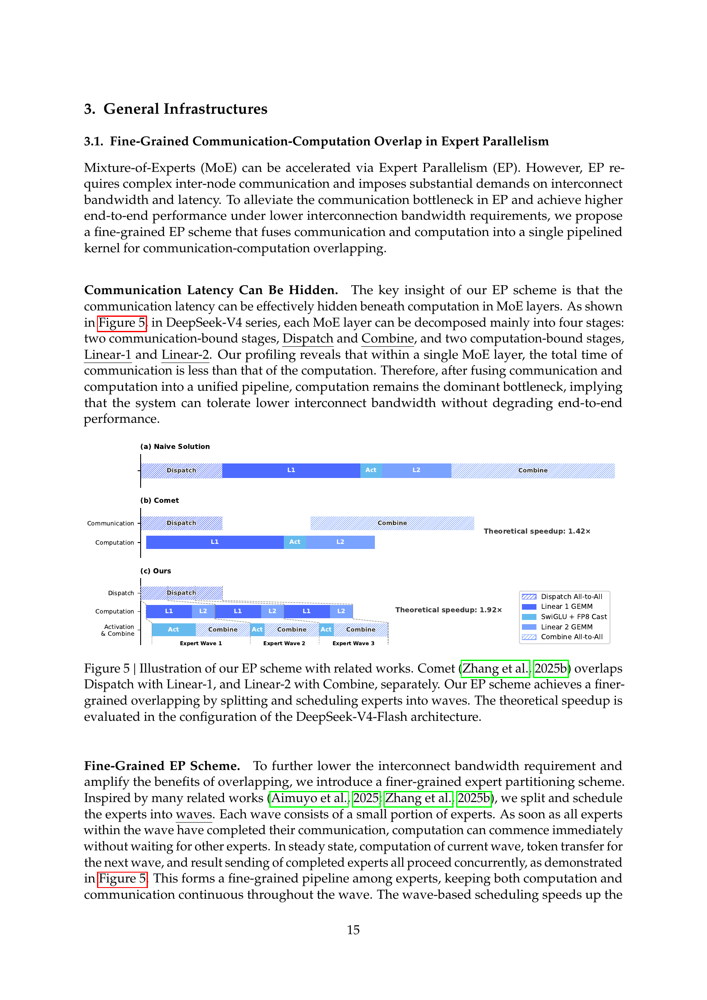
分析表明，在 DeepSeek-V4 中单个 MoE 层内通信总时间少于计算时间。每 GBps 互联带宽可隐藏 6.1 TFLOP/s 的计算。当带宽满足此阈值后，继续增加带宽将收益递减。
基于 CUDA 的 mega-kernel 实现已作为 DeepGEMM 的组件 MegaMoE 开源。在 NVIDIA GPU 和华为 Ascend NPU 上验证，通用推理工作负载实现 1.50~1.73× 加速，延迟敏感场景可达 1.96× 加速。
DeepSeek-V4 采用 TileLang（一种领域特定语言 DSL）开发一组融合内核，替代大量细粒度的 Torch ATen 算子，在保持开发效率的同时实现最优性能。
关键特性包括：
为确保训练、后训练和推理流水线之间的比特级对齐，DeepSeek-V4 实现了端到端的批次不变和确定性内核。
在后训练阶段引入量化感知训练 (QAT)，对两个组件应用 FP4 (MXFP4) 量化：
训练框架构建在 DeepSeek-V3 的基础设施之上，针对新架构组件做了适配：
通过融合内核、选择性重计算策略和调整 DualPipe 1F1B 重叠方案，mHC 的 wall-time 开销仅为重叠 1F1B 流水线阶段的 6.7%。
设计两阶段通信方案解决压缩注意力在 CP 下的挑战：第一阶段交换和压缩 KV 条目，第二阶段通过 all-gather 收集所有 CP rank 上的压缩 KV 条目。
实现了张量级的 activation checkpointing 机制，开发者只需实现前向传播并标注需要 checkpoint 的张量。框架利用 TorchFX 追踪计算图，自动识别最小重计算子图。
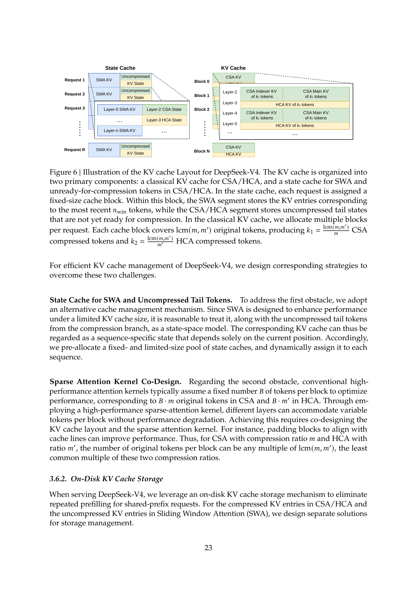
混合注意力机制引入了多种不同尺寸和更新规则的 KV 条目类型。DeepSeek-V4 设计了异构 KV 缓存布局，包含状态缓存（SWA KV 和未压缩 KV 状态）和经典 KV 缓存（CSA 和 HCA 压缩 KV）。
利用磁盘 KV 缓存消除共享前缀请求的重复 prefill。针对 SWA KV 条目提出三种管理策略：
在 DeepSeek-V3 预训练数据基础上，构建了更多样、更高质量、更长有效上下文的训练语料。预训练语料超过 32T token，包含数学内容、代码、网页、长文档等高质量类别。
关键改进包括：针对网络数据实施过滤策略移除批量自动生成和模板化内容；中间训练阶段加入 agentic 数据增强编码能力；为多语言数据构建更大语料；特别强调长文档数据的策展。
| 参数 | DeepSeek-V4-Flash | DeepSeek-V4-Pro |
|---|---|---|
| Transformer 层数 | 43 | 61 |
| 隐藏维度 d | 4096 | 7168 |
| CSA 压缩率 m | 4 | 4 |
| HCA 压缩率 m' | 128 | 128 |
| 注意力 top-k (CSA) | 512 | 1024 |
| Query heads nh | 64 | 128 |
| Head 维度 c | 512 | 512 |
| Query 压缩维度 dc | 1024 | 1536 |
| 输出投影组数 g | 8 | 16 |
| 滑动窗口 nwin | 128 | 128 |
| 专家配置 (共享+路由) | 1 + 256 | 1 + 384 |
| 专家隐藏维度 | 2048 | 3072 |
| 激活专家数 | 6 | 6 |
| MTP 深度 | 1 | 1 |
| mHC 扩展因子 nhc | 4 | 4 |
| 总参数 | 284B | 1.6T |
| 激活参数 | 13B | 49B |
训练万亿参数 MoE 模型面临显著的稳定性挑战。DeepSeek-V4 发现两种有效的实用技术：
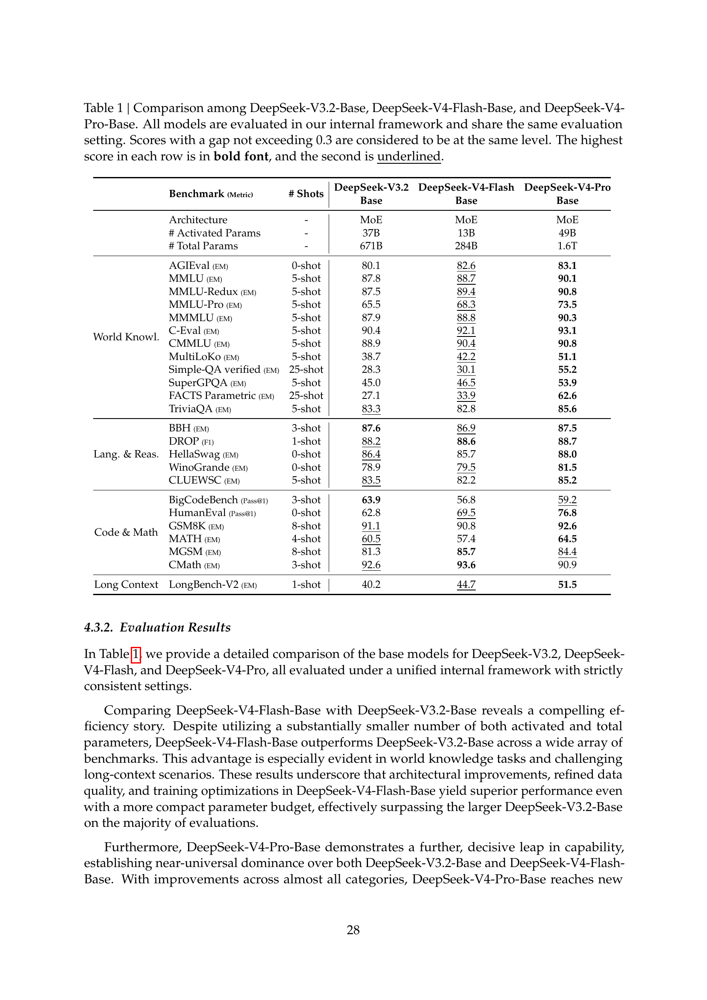
关键发现：
后训练流水线主要沿用 DeepSeek-V3.2 的方法，但做了一项关键替换：混合强化学习 (RL) 阶段被完全替换为策略上蒸馏 (On-Policy Distillation, OPD)。
后训练采用两阶段范式：
推理努力模式：DeepSeek-V4 支持三种推理模式：
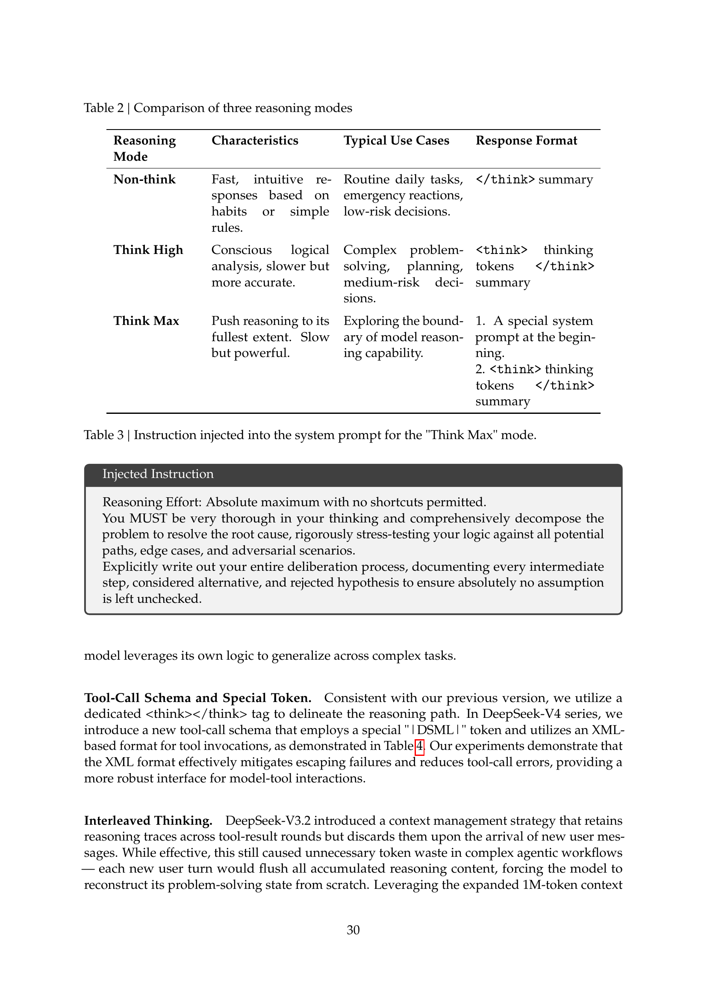
生成式奖励模型 (GRM)：对于难以验证的任务，不使用传统标量奖励模型，而是策划基于评分准则的 RL 数据并使用 GRM 评估。关键创新是将 RL 优化直接应用于 GRM 本身——actor 网络原生充当 GRM，实现评判能力和生成能力的联合优化。
工具调用 Schema：DeepSeek-V4 系列引入新的工具调用格式，使用 "|DSML|" token 和基于 XML 的格式，有效缓解转义失败并减少工具调用错误。
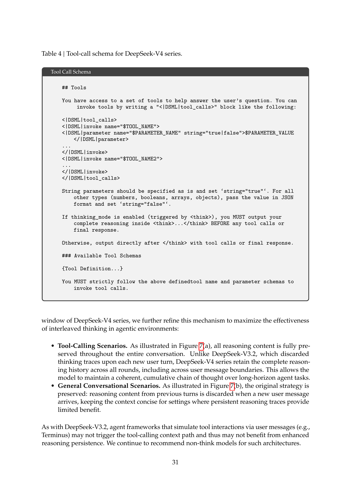
交错思维 (Interleaved Thinking)：利用百万 token 的扩展上下文窗口，在工具调用场景中完整保留所有轮次的推理内容（包括跨用户消息边界）；在一般对话场景中则丢弃先前轮次的推理内容以保持简洁。
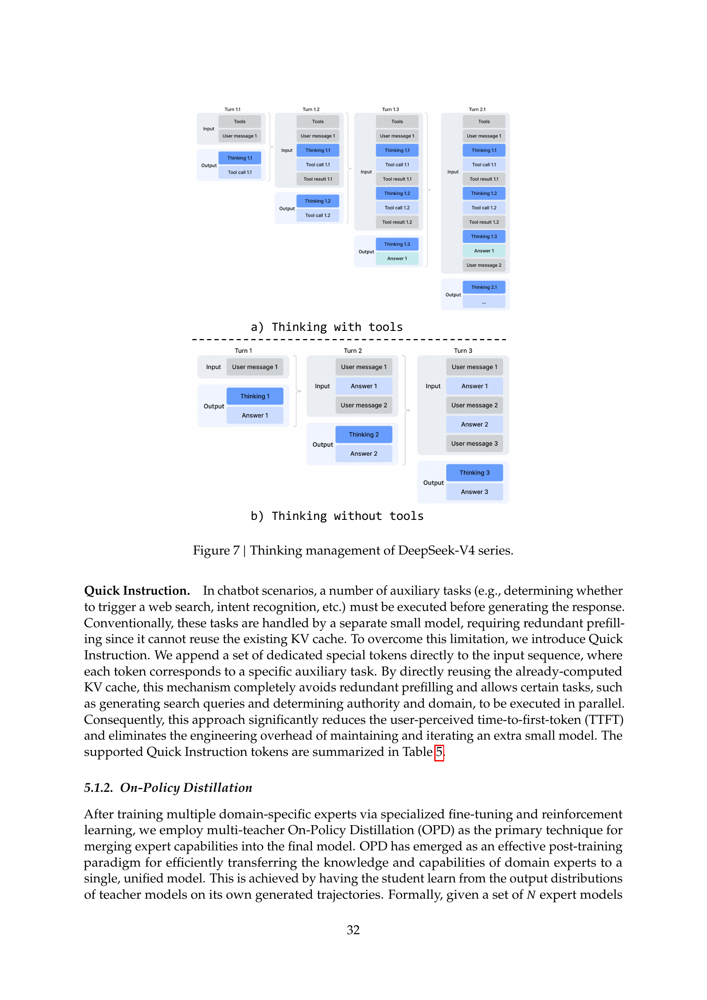
Quick Instruction：在输入序列末尾追加专用特殊 token，每个 token 对应一个辅助任务（如判断是否需要搜索、生成标题、分类权威性等）。通过复用已计算的 KV 缓存避免冗余 prefill，显著降低首 token 延迟 (TTFT)。
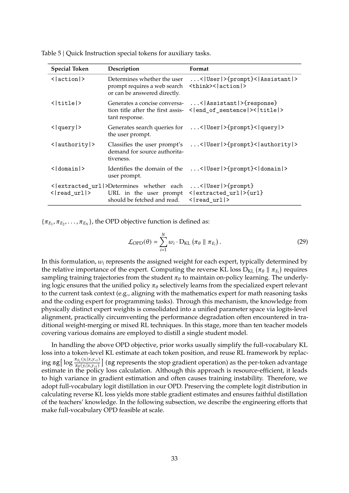
训练完多个领域专家后，采用多教师策略上蒸馏 (OPD) 将专家能力整合到最终模型。给定 N 个专家模型 {πE₁, ..., πE_N}，OPD 目标函数为：
其中 wi 是各专家的分配权重。通过计算反向 KL 损失 DKL(πθ ‖ πE_i)，学生模型在自身生成的轨迹上学习教师的输出分布。DeepSeek-V4 采用全词汇表 logit 蒸馏而非 token 级 KL 估计，获得更稳定的梯度估计和更忠实的知识蒸馏。
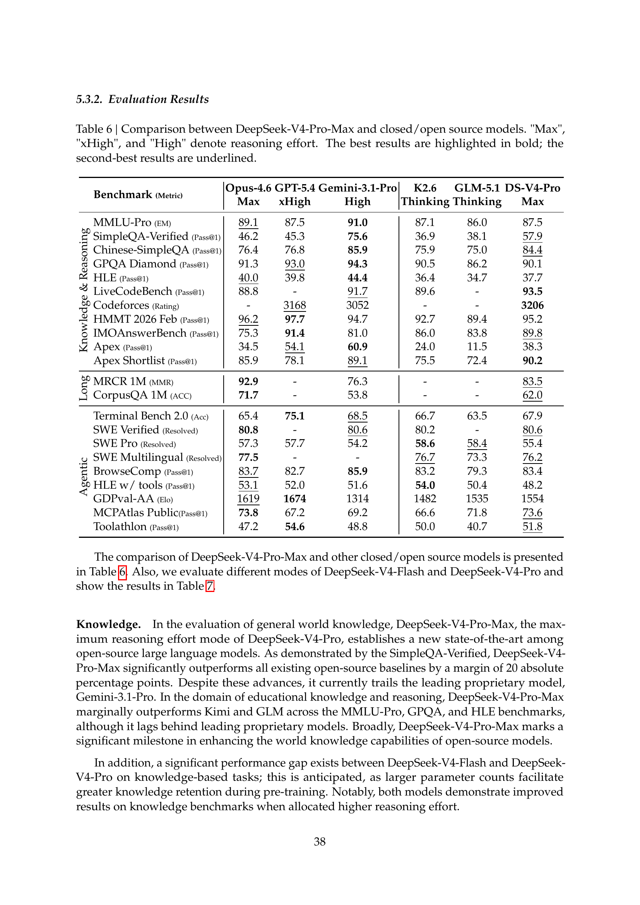
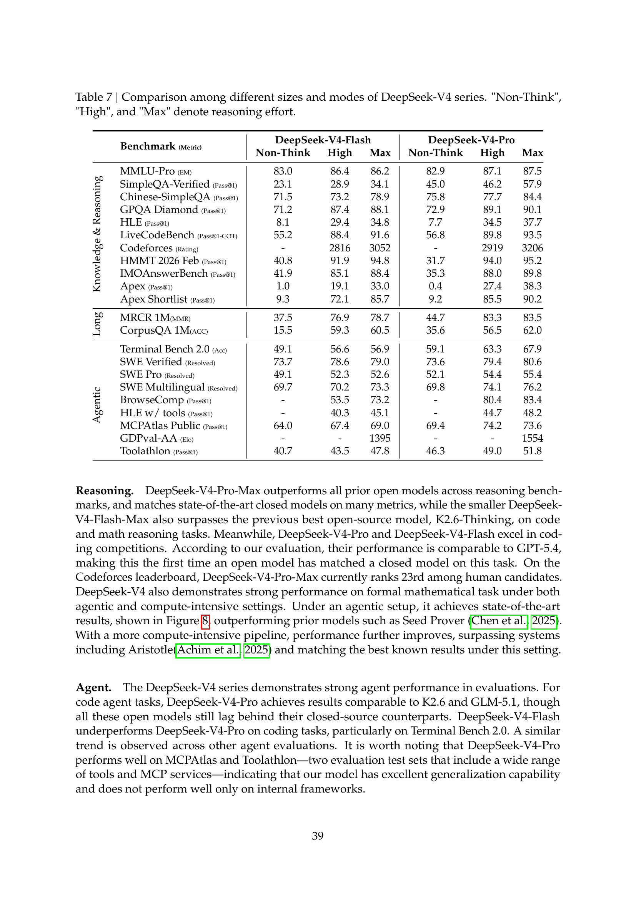
DeepSeek-V4-Pro-Max 在 SimpleQA-Verified 上以 20 个绝对百分点的优势超越所有开源模型。在 MMLU-Pro、GPQA、HLE 等教育知识评测上也展现领先优势。目前仍略落后于 Gemini-3.1-Pro。
DeepSeek-V4-Pro-Max 在所有推理 benchmark 上超越先前所有开源模型，在多项指标上达到闭源模型水平。在 Codeforces 排行榜上排名第 23 位。在形式化数学任务（PutnamBench）上，DeepSeek-V4 在 hybrid formal-informal 设置下达到 120/120 的满分。
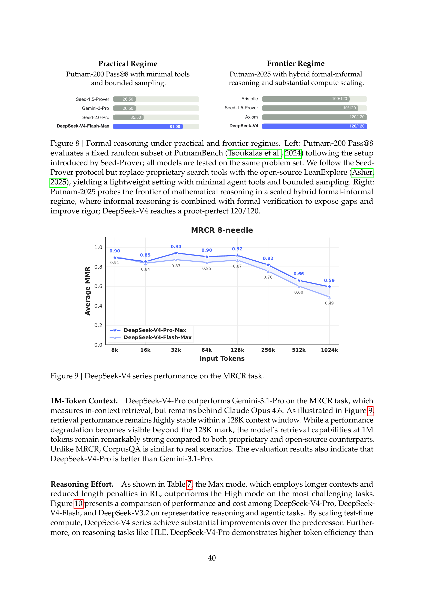
DeepSeek-V4 系列在 Agent 评估中展现强劲表现。DeepSeek-V4-Pro 在 MCPAtlas 和 Toolathlon 上表现优异，表明其在广泛工具和 MCP 服务上具有出色的泛化能力。
DeepSeek-V4-Pro 在 MRCR 任务上超越 Gemini-3.1-Pro。128K 上下文窗口内检索性能高度稳定，1M token 时仍然保持相当强的检索能力。
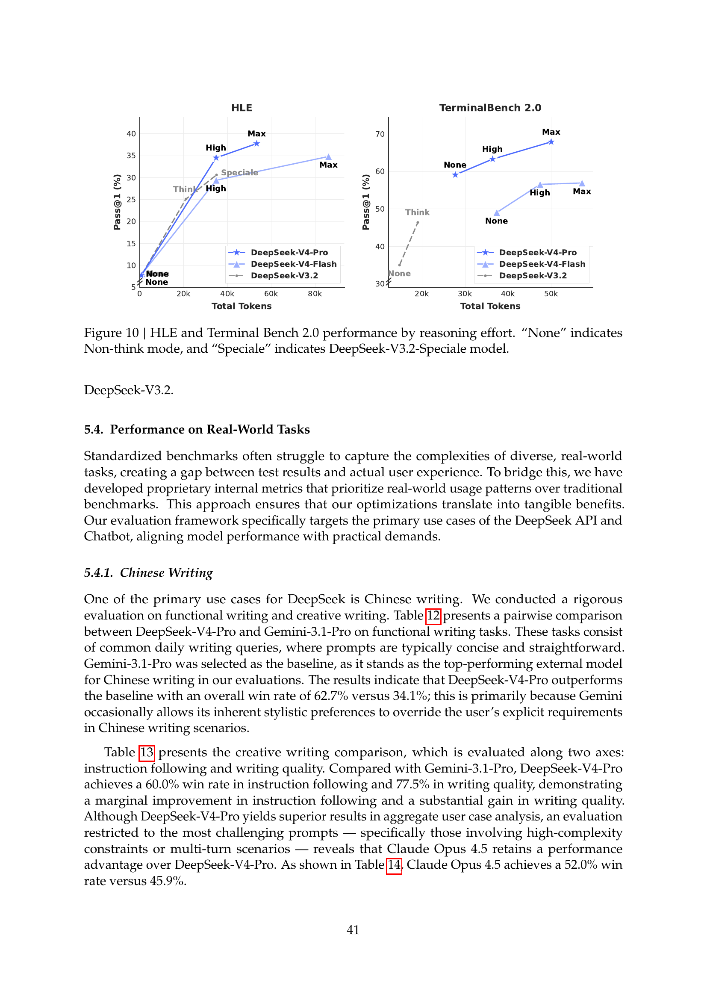
功能写作对比中，DeepSeek-V4-Pro 以 62.7% vs 34.1% 的总体胜率超越 Gemini-3.1-Pro。创意写作评估中，DeepSeek-V4-Pro 在指令遵循方面 60.0% 胜率、写作质量方面 77.5% 胜率。
检索增强搜索：DeepSeek-V4-Pro 以显著优势超越 DeepSeek-V3.2。Agentic 搜索：在复杂任务上持续优于 RAG，且成本仅略高于标准 RAG。
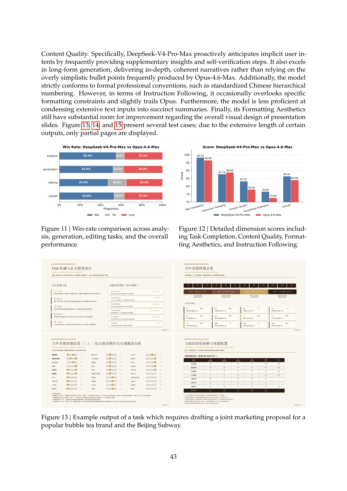
在 30 项高级中文专业任务的人工评估中，DeepSeek-V4-Pro-Max 以 63% 的不败率超越 Opus-4.6-Max，在任务完成度和内容质量上表现尤为突出。
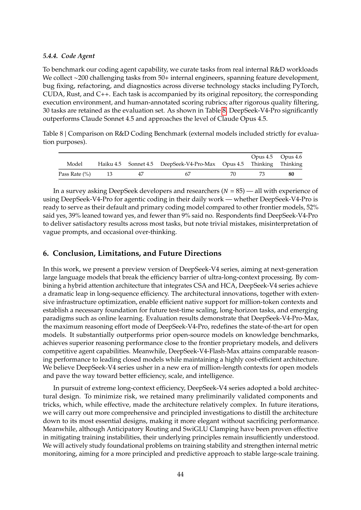
在内部开发者调查 (N=85) 中，52% 直接肯定 DeepSeek-V4-Pro 可作为默认编码模型，39% 倾向同意，不到 9% 持否定意见。
DeepSeek-V4 系列通过结合 CSA 和 HCA 的混合注意力架构，打破了超长上下文处理的效率壁垒。架构创新加上广泛的基础设施优化，实现了百万 token 上下文的高效原生支持，为未来的测试时扩展、长期任务和在线学习等新兴范式奠定了基础。
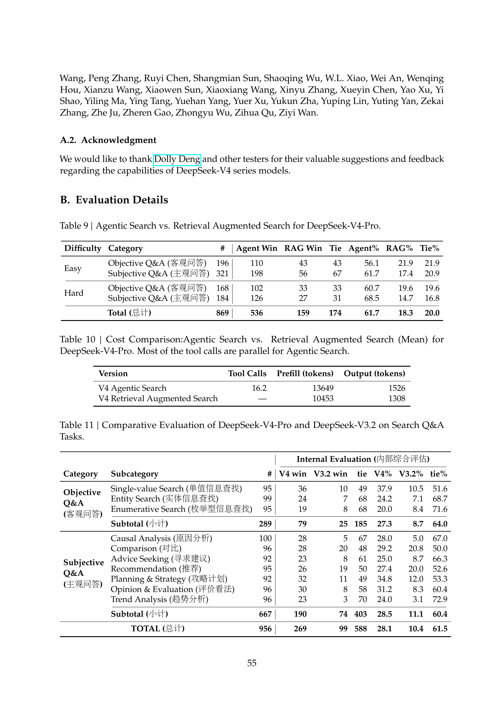
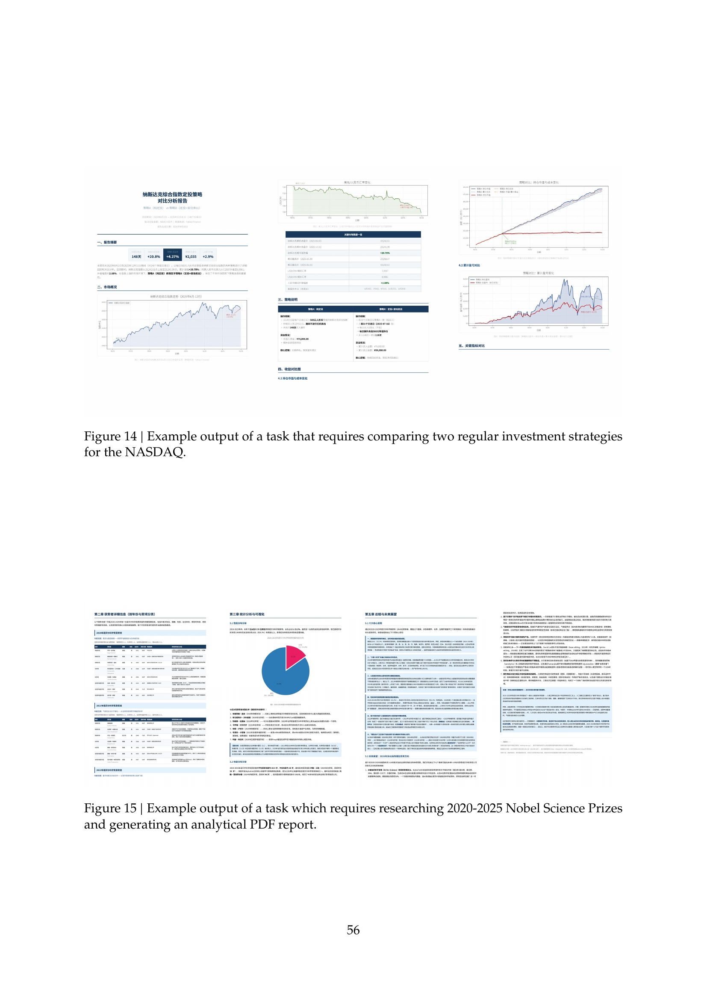
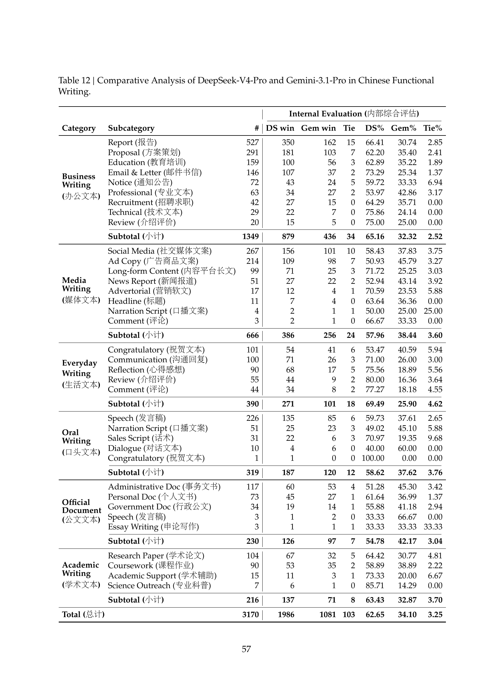
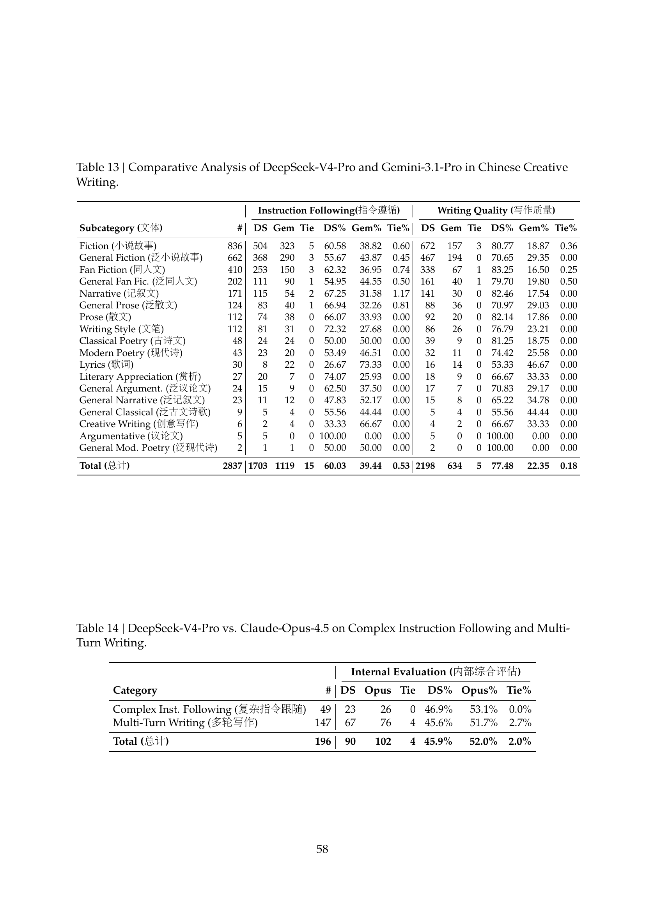